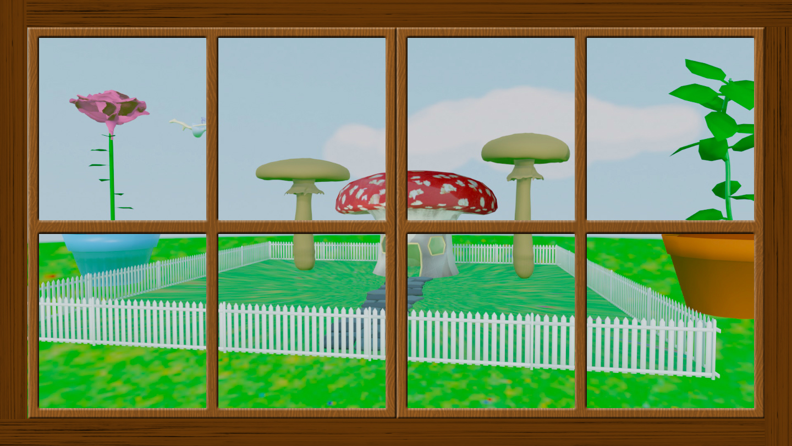

The Artist is a video I created to fight against bullying. Being a part of the art community in high school, I noticed that many of my peers experienced bullying due to the stereotypes of being the “art kids”. Even these days, I see that artists are looked down upon. The artists in my school played a huge role in making our campus a nicer place so I wanted to make a change in how these hard-working students were treated.
This video is a representation of how many people are currently living their lives vicariously through their Animal Crossing character. Animal Crossing has helped many people of various ages cope with being in quarantine. This game helps people feel like they are achieving something by doing small everyday tasks. I wanted to show the values of being out in nature and growing bonds with friends. I hope my video brings a smile to someone's face.
4 Seasons is a video installation takes you through all the seasons in an immersive 3D experience. I took footage that represents the best parts of each season, focusing on the changes in climate. I want my viewers to appreciate nature and the world around them, so my video is heavily focused on natural themes. I wanted to create a relaxing, safe space where a viewer can clear their mind. This project combines sound with visual media to further create a feeling of calmness. There is so much going on in the world, it is important to take a break and enjoy art.
This is an AR experience that can be viewd through Artivive. This video brings you into the world of a fairy. We are spectators to this ethereal creature as she dances around carefree. This is meant to make the viewer appreciate the little things in life. We constantly are moving arounf in this fast paced environment, focusing so much on getting work done. If we all took a moment to relax, we might notice something beautiful occuring in frount of our eyes. Scan the image below in Artivive to see the full effect.
